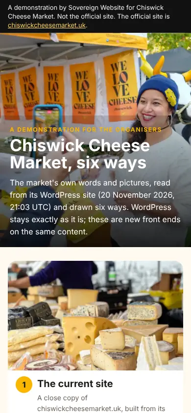
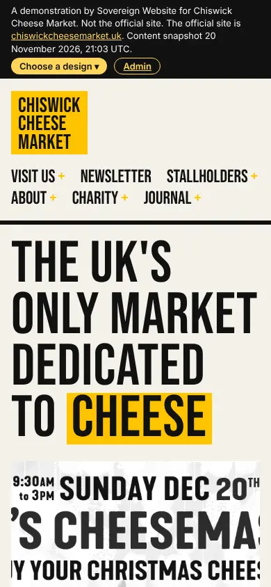
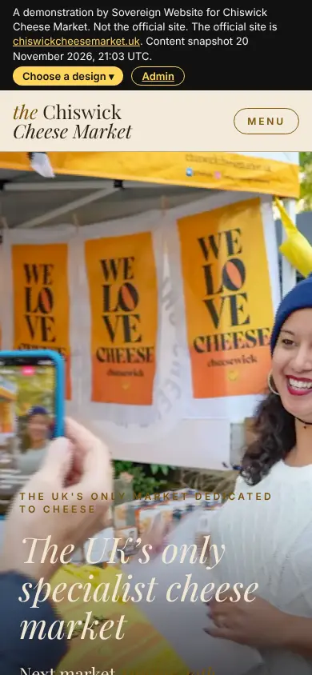
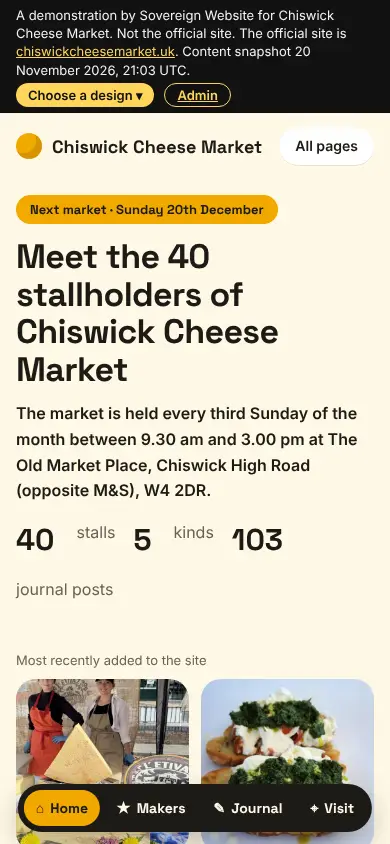

Synthetic users: Chiswick Cheese Market demonstration, round 1
Site: https://chiswick-cheese-market.organisation.sovereignweb.site/ (the front door and designs 1 to 6). Commit: 86a14d8 (v0.1.2, live). Run: 20 November 2026, about 22:15 UTC, by design.b.rounds. Look score: 3.0 (3, 3, 2, 3, 4). Best design votes: 5, 2, 5, 2, 5. Nobody said "wow"; the organiser gave design 5 "a quiet ooh". The review.
Method: Synthetic users. One agent played all five personas in turn, which makes them less independent than one agent each. It was given the first phone and desktop screens and the whole phone page (cut at 5,000 px) for the front door and each design's home, plus the visible text. design.b.rounds checked three of its claims in the page text, and all three hold: the banner appears eight times in design 1; a stall description stops at "Located in Wendover, No."; design 6 says "the five designs" while the front door says "six ways". These are simulations: they inform a rating, and never replace the measured checks or a real person.
Verdicts
Phone visitor in a hurry: 3 of 5
The black demonstration bar "takes the top fifth of every screen". The design 3 poster is cut at both edges. In design 4, "Sunday 20th December" is dim gold italic on a dark photo. Best: 5 (the date, the address and a tab bar all on one screen). Weakest: 6. Change: make the demonstration bar one line.
Regular shopper: 3 of 5
Found the date (design 2: "NEXT MARKET: SUNDAY 20TH DECEMBER 2026"), but not who will be there. Designs 1 and 4 list past 2026 dates without marking them; designs 2 and 3 strike them through. Best: 2. Change: a "who's coming on the 20th" list (only if the market publishes it).
Low-vision reader: 2 of 5
The bar fills the screen at 200 per cent. Design 1's banner would be read aloud eight times. Its social links read as "f", "IG", "@", "TT", "X". There is thin italic type over photos in design 4. Design 3's "04" badge covers "MASCOT". Design 6's table runs off the phone. Best: 5. Change: contrast, and no repeated or overlapping text.
Design critic: 3 of 5
"Designs 2, 3 and 4 are restyles of design 1's section order. Only 5 and 6 are new ideas." Specific faults: - "NEWSLETTER" sits off the baseline in design 2's navigation; - "Mascot Buttercup" has no picture in 2, 3 and 4; - design 4 is mostly cream in light mode; - design 5's figures are badly set ("40 stalls 5 kinds 103", with "journal posts" on its own line). Best: 2. Change: give 2 to 4 their own layouts.
Market organiser: 4 of 5
Trusted "our words, photos and dates", and design 6's candour ("A map? Not drawn."). Problems: - the cropped poster; - the cut-off stall description; - "Admin" beside "Choose a design" on public pages; - "five designs" against "six ways". Best: 5 ("puts our stallholders first"). Weakest: 3. Change: fix the cropping and overlap bugs before Monday.
Agreed by three or more
- The demonstration bar is too heavy on phones.
- Design 5 gets the basics right: the date, the address and the stallholders first.
- Visible bugs make it look unfinished: the cropped poster, Buttercup's missing or covered picture, and the date over the photo in design 4.
- Design 4 is the hardest to read.
What the personas saw




Pictures in these screenshots are the market's own, from chiswickcheesemarket.uk, as shown on the demonstration.